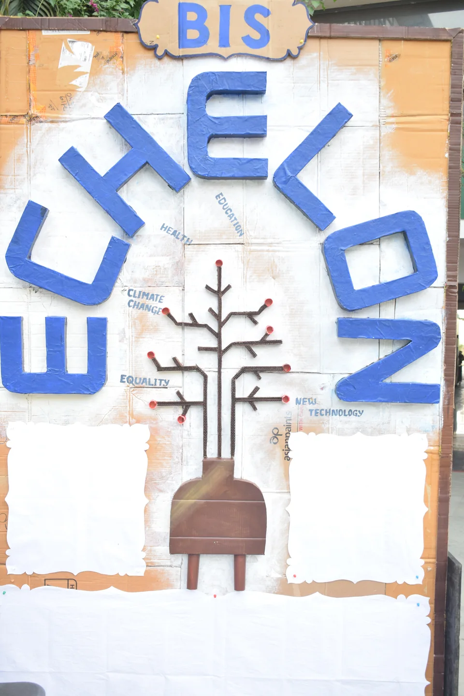
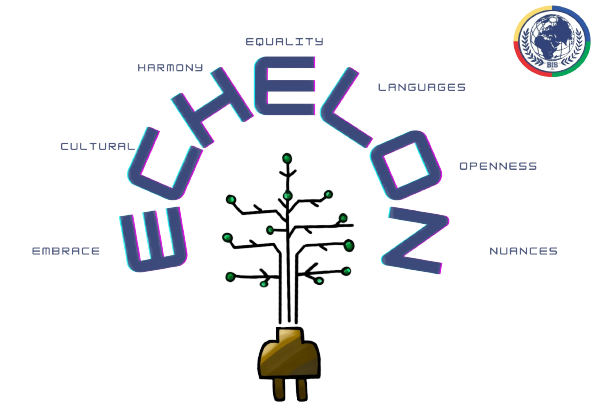

Moments from Echelon
A photo journey through our past events.


A photo journey through our past events.

The Echelon interschool event is a gathering of the brightest minds from various schools across the region, orchestrated by Bangalore International School. Designed to celebrate and elevate the talents of young computer science enthusiasts, Echelon provides a dynamic platform for students to showcase their prowess in technology, coding, and innovation. Through a series of challenges, workshops, and collaborative opportunities, participants can deepen their knowledge, connect with like-minded peers, and foster a spirit of digital creativity. Echelon's mission goes beyond competition; it's about shaping the next generation of tech leaders and visionaries, promoting a shared passion for computer science, and building a community that drives the future of technology.